House matrix0097
Published house screenshot; original GBA blue/pale walls/furniture; three source homes share exactly the same matrix


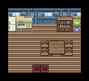
Reference SHA256 d8630bfb3c330bd3ece780eff9fc73713adea4f2a72de6563a9962e3bb1f2752
Current frozen B11 tour and focused runtime suites passed. Owner Delta visual acceptance remains pending. Screenshots below are current frozen B11 mGBA frames. Full-layout previews remain static source renders. Different DS/GBA cameras/perspective/publication scales preclude pixel1:1 claims.
Game source 489c404346f572aefb6856b3dd48a9b364a08ceb
Frozen B11 ROM SHA256 df69e014e706168c56180828487a9ab12709a9bccd3dff063fee5f7af5d4f2f4
Complete checklist/test status/scope · Actual B11 frame manifest/checksums · Actual B11 tour report / current evidence
Published house screenshot; original GBA blue/pale walls/furniture; three source homes share exactly the same matrix

Reference SHA256 d8630bfb3c330bd3ece780eff9fc73713adea4f2a72de6563a9962e3bb1f2752
Published cafe screenshot; cream walls/checkered floor, actual table/bar/windows/plants; the native staff aisle is a documented safety adaptation


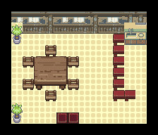
Reference SHA256 eae47433799fbd97549e8e58df5b47f057bbd608fada5161243b1d1175bbc647
Published native DS screenshot256x192; source eight stools and full native furniture handled separately from source actors

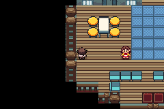
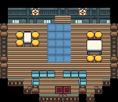
Reference SHA256 594bd152a637c9097eaf4be886fbd2c07e5b21a35940172f343fd8ba82697dec
Published native DS screenshot256x192 supports paving, pale edging, bollards, gangway and ship flank. Rear terminal and sailboat positions derive from canonical model/anchor records; not every model is visible in this crop. Ship interiors/sailing are outside this city pass


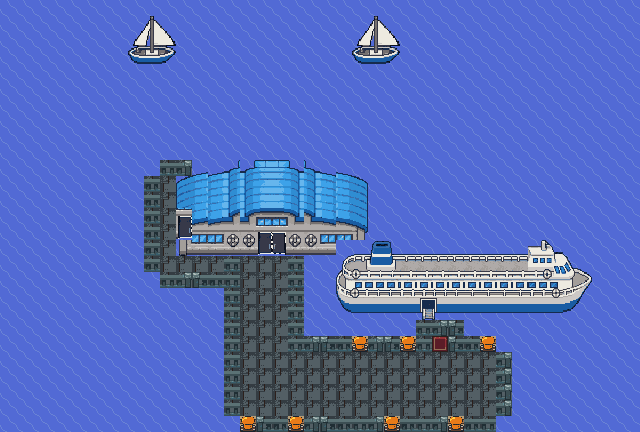
Reference SHA256 2c45b023b96c070f1990728e315c1f83c498e29bbe91bf636007cbf037c651fd
Annotated published guide composition, not a raw DS-native frame. Native source footprints retain correct branch/drop/lifts; teal floors/plants and purple lantern room with a circular housing; repeated native balcony-window masonry and3x3 housing scale compression are chosen visual adaptations, not forced hardware limits


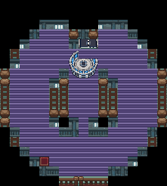
Reference SHA256 e37da3bd795c7fbc041ad593daad89fd3400bfabfc85afc096989537e627283f
Published composite/crop256x297; original native GBA warm reception with green floor emblem/blue rear panels; raised reception is flattened


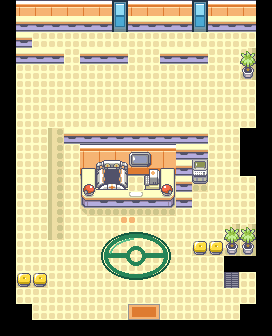
Reference SHA256 3a1631fb84272c3cd7552420d07bfeb1720e8e734ba952ca47570c1084c84ba3
Published242x163 image; private native cool palette, three counters, glass table, ten source stools, plants, terminal and full footer row; communications explicitly offline

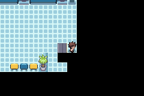
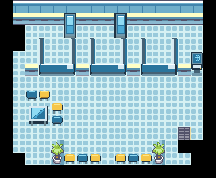
Reference SHA256 7865565de56598403fea4fa2b674549b410ece08830bad4a8e772059e363ec4c
Published229x175 image; native source shelves/display racks/glass table/plant positions; stock preserved


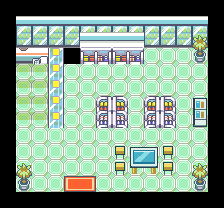
Reference SHA256 dbfa3e7e21a58089d07073e41f1c6a481379022d4e916bf007032767bdb67e79
Native frames remain240×160; entry viewpoints do not show every furnishing. Source layouts and focused gameplay reports supplement them.
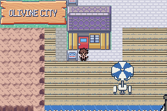
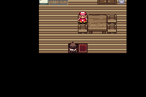


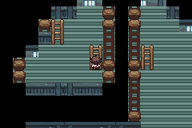
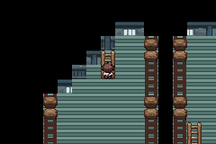
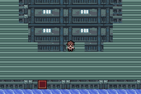


The lighthouse guide is an annotated multi-floor composition. Separate full native lift-cabin/reverse-quay views remain unverified; their layout is canonical source data. Balcony repeated windowed masonry and3×3 housing scale are chosen visual adaptations. Lift machine208 is explicitly off-room/cropped. The quay crop supports pavement/bollards/ship flank/gangway; rear facade/boat placement has source-geometry evidence. Voyages/ship interiors/other-region arrival, DS networking and new story/rewards are outside this city pass. Owner approval remains required.
Earlier V9/B9 and V7 captures retain their original manifests as historical checkpoints. None is relabelled as B11 proof. The authored-static-v8/ directory name is preserved for link stability; those full-layout previews are static and their24 layout hashes match current B11 source.